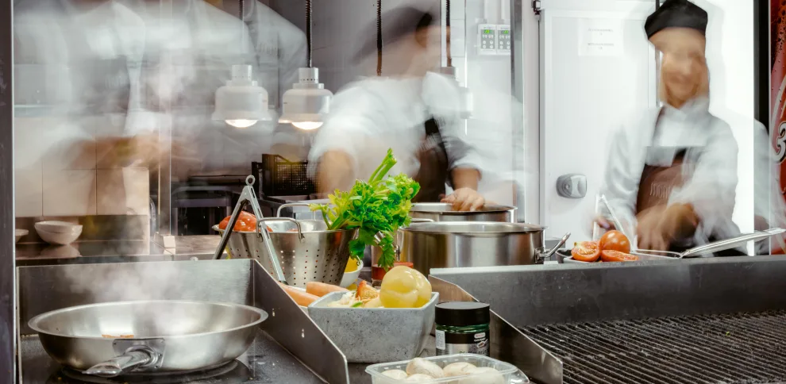

Gastronomía
Así se cuece el futuro gastronómico de Barcelona . Explorar esta historia
La ciudad ha sabido reinventarse sin perder su esencia. Hoy, una nueva generación de chefs, la apuesta por el producto local y el regreso a la cocina catalana marcan el camino de la Barcelona gastronómica del futuro